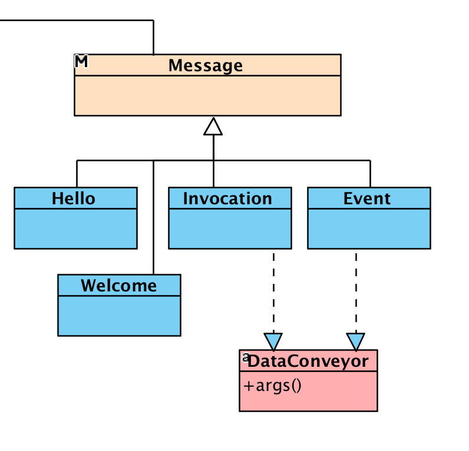

Payloads
WAMP Messages, arranged as either textual or binary formats (e.g. JSON, MsgPack, etc.), are moved over the network by an underlying transport protocol such as WebSocket or (raw) TCP.
Messages are made of control headers (e.g. type code, request identifier, additional details, etc.) and an optional payload whose content represents data specific to your application. Data conveyed by messages can be either a list of indexed arguments called just args, or a dictionary of named arguments called kwargs.
frame2 frame1
.-------------. .-------------,---------.
| payload ... | --> | ... payload | headers | -->
'-------------' '-------------`---------'
Payloads are always at the end of messages so that routers don’t have to parse them. Infact, routers are not required to inspect payload contents to do their job, which is all about routing messages.

Incoming data
Akka Wamp provides you with efficient streaming parsers that defer deserialization of incoming data to the very last moment.
The following table lists incoming Messages behaving as DataConveyors with the correspondent consumers/handlers and client roles you shall provide to extract the data.
| PayloadConveyor | Consumer/Handler | Client |
|---|---|---|
Event |
(Event) => Unit |
Subscriber |
Invocation |
(Invocation) => Any |
Callee |
Result |
(Result) => Unit |
Caller |
Error |
n.a. | all |
Arguments
The easiest way to access data conveyed by incoming messages is as follows:
- Scala
-
// val conveyor: Event = ... val args: List[Any] = conveyor.args val kwargs: Map[String, Any] = conveyor.kwargs val user: UserType = conveyor.kwargs[UserType] class UserType(val name: String, val age: Int /*, ... */) - Java
-
// Payload conveyors are messages such as events, invocations, errors, etc. List<Object> args = conveyor.args(); Map<String, Object> kwargs = conveyor.kwargs(); UserType user = conveyor.kwargs(UserType.class); public class UserType { public String name; public Integer age; }
Just access the following members:
-
args: List[Any]
a list of indexed arguments -
kwargs: Map[String, Any]
a dictionary of named arguments -
kwargs[T]: T
a user defined type
Data types
Akka Wamp will take care of the deserialization process either with Jackson JSON Parser for textual format or MsgPack Parser for binary format. The default parsers will apply the following data type bindings:
| Value | JSON / MsgPack | Scala / Java |
|---|---|---|
"string" |
string | java.lang.String |
456 |
number | java.lang.Integer |
2147483648 |
number | java.lang.Long |
12.56 |
number | java.lang.Double |
[] |
array | scala.collection.immutable.List[Any] |
java.util.List<Object> |
||
{} |
object | scala.collection.immutable.Map[String, Any] |
java.util.Map<String, Object> |
||
true |
boolean | java.lang.Boolean |
false |
boolean | java.lang.Boolean |
null |
null | null |
Unparsed
If you want full control of the deserialization process then you’ll have to access to the unparsed data as follows:
- Scala
-
// val conveyor: Event = ... conveyor.payload match { case p: TextLazyPayload => val unparsed: Source[String, _] = p.unparsed // parse textual source ... case p: BinaryLazyPayload => val unparsed: Source[ByteString, _] = p.unparsed // parse binary source ... } - Java
-
// Event conveyor = ... if (conveyor.payload() instanceof TextLazyPayload) { TextLazyPayload p = (TextLazyPayload) conveyor.payload(); Source<String, ?> unparsed = p.unparsed(); // parse textual source ... } else if (conveyor.payload() instanceof BinaryLazyPayload) { BinaryLazyPayload p = (BinaryLazyPayload) conveyor.payload(); Source<ByteString, ?> unparsed = p.unparsed(); // parse binary source ... }
Unparsed data is represented as Akka Stream sources you’re put in charge to consume with whatever parser you might prefer to use for whatever format you know incoming data could have been arranged with (e.g. UBJSON, YAML, XML, ProtoBuf, etc.)
Outgoing
TBD
Arguments
TBD
- Scala
-
// list of indexed arguments Payload(args = List("value", 2, true /* ... */)) // dictionary of named arguments Payload(kwargs = Map( "name1" -> "value1", "name2" -> 2 // ... )) - Java
-
// empty payload Payload empty = Payload.create(); // list of indexed arguments Payload indexed = Payload.create(asList("paolo", 99, true)); // dictionary of named arguments Payload named = Payload.create(new HashMap<String, Object>(){{ put("name", "paolo"); put("age", 99); put("male", true); }});
Streams
TBD